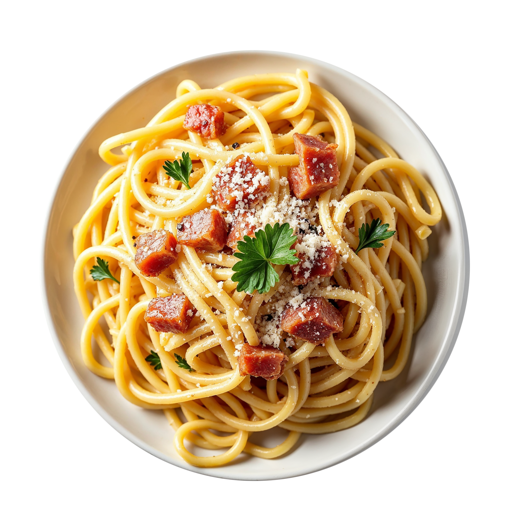

Паста карбонара

25 минут
2 порции
Средняя сложность
Ингредиенты
- Спагетти — 200 г
- Бекон — 150 г
- Яйца — 2 шт
- Желток — 1 шт
- Сыр пармезан — 50 г
- Чёрный перец — по вкусу
- Соль — по вкусу
Приготовление
- Отварите спагетти в подсоленной воде до состояния аль денте.
- Обжарьте бекон на сухой сковороде до золотистой корочки.
- В миске смешайте яйца, желток и тёртый пармезан.
- Слейте воду со спагетти, оставив немного воды для соуса.
- Соедините горячую пасту с беконом, снимите с огня.
- Быстро вмешайте яично-сырную смесь, добавьте немного воды от пасты.
- Поперчите и сразу подавайте.
Совет
Не готовьте соус на огне — иначе яйца свернутся,
и получится омлет вместо соуса.
← Все рецепты